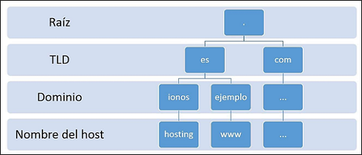

WEB, DHCP Y DNS SERVERS
I AM:
DIANEY MARCELA MACIAS VARGAS
I AM:
DIANEY MARCELA MACIAS VARGAS
A web server is a software that is part of the server and its main mission is to return information (pages) when it receives petitions from users. For the correct functioning of a web server we need a web client that makes a http or https request through a browser such as Chrome, Firefox or Safari and a server where the information is stored.
Types of WEB Servers:
1. Apache HTTP Server
Apache is free and open source software, which for years has been the most widely used software by web servers, currently rivaling Nginx.
It also stands out for being multiplatform , being compatible with operating systems such as Linux, Window, IOS, Unix, etc.
2. Nginx Server
As with Apache, we would be facing a open source and multiplatform software compatible with Window, IOS, Linux, etc. It has a paid version in addition to the free one.
This type of web server is known for its good performance when it has to manage a high number of simultaneous visits , since users do not perceive a delay in loading the page even though that concurrent access is occurring.
It is currently the most used web server software in the world.
3. LiteSpeed
LiteSpeed was born as a replacement for Apache , to improve the performance of the web server in high traffic environments. Like Nginx, it has a free version and a paid version.
Currently performance tests do not indicate an improvement over Nginx.
4. Microsoft IIS Server
This type of web server is developed by Microsof t and, in the event that Microsoft tools need to be integrated, it would be a recommended alternative due to the compatibility we would obtain.
It runs on Windows thanks to IIS (Internet Information Services) technology and is compatible with pages programmed in ASP (Active Server pages) or .NET , unlike other web servers compatible with Linux.
5. Sun Java System Web Server
This type of server is intended for programmers who work with Java, Python or Ruby.
It is a web server created to support a heavy workload with very specific technologies such as Java.
*https://www.webempresa.com/hosting/que-es-servidor-web.html

Dynamic Host Configuration Protocol or dynamic host configuration protocol is an extension of the Bootstrap (BOOTP) protocol. The boot protocol, known by the acronym BOOTP for Boot Strap Protocol, is a UDP network protocol used by network clients to obtain an IP address automatically.
DHCP was developed as a solution for large networks, mobile computers and laptops and therefore complements BOOTP, among other things, for its ability to automatically assign reusable network addresses and by the existence of additional configuration possibilities.
The configuration parameters sent by the DHCP server are not valid for an indeterminate period of time, but for a "loan" time defined by the administrator known as concession or rental of addresses (lease time) . This indicates how long a device can access the network with that address. Before it expires (after half the time), clients have to request an extension of the lease by sending a new DHCP REQUEST. If it don't, the DHCP refresh does not take place and the server releases it accordingly.
This network protocol is based on a client-server model. In this scenario, a device (a laptop, mobile, etc.) requests, when connecting to a network, the IP configuration to a DHCP server through the ports UDP 67 and 68 (for IPv6 , ports 546 and 547 ), which for its part consults in a database the addresses and assignable network parameters before giving an answer. Once the query is made, the server sends the following parameters to the client through the network:
- Unique IP address
- Subnet Mask
- Standard Gateway
- DNS Servers
- Configuration proxy by WPAD (Web Proxy Auto-Discovery Protocol)
*https://www.ionos.es/digitalguide/servidores/configuracion/que-es-el-dhcp-y-como-funciona/
*https://es.wikipedia.org/wiki/Protocolo_de_arranque#:~:text=El%20
protocolo%20de%20arranque%2C%20conocido,definido
%20en%20el%20RFC%20951.
The process of translating domain names into IP addresses is known as name resolution.
IP address: 93.184.216.34
Domain: www.example.es

A DNS server, also known as a domain name system server or Domain Name System, consists of software for servers that uses a DNS database to respond to requests that are related to the domain name space . As they are generally housed on dedicated hosts, the computers that host these programs are also called that.
Every time a user registers a domain, a WHOIS entry is created in the corresponding registry and this is stored in DNS as a “resource record”. The database of a DNS server thus becomes the compilation of all the records in the zone of the domain namespace that it manages.
The creation of the domain name system in 1983 replaced the earlier resolution procedure, which was very error-prone and based on a local hosts file. This hosts.txt file can still found today on UNIX-based systems in the etc / directory and, on Windows computers, in % SystemRoot% \ system32 \ drivers \ etc.
The hosts.txt file required manual maintenance and regular updating, an effort impossible as the Internet grew exponentially. Today, this file is used exclusively for the classification of IP addresses in local networks. It also allows blocking web servers by automatically redirecting their address to local hosting (local host).
On the other hand, a differentiation is usually made between primary and secondary DNS servers:
1. Primary, Main or Master Server: is a DNS server that stores the information about a certain zone of the domain namespace in its own database.
2. Secondary or Slave Server: when the information of a name server does not come from its own zone files, but is second or third-hand. This situation occurs when a server cannot resolve a request with its own database and has to resort to the information available on another name server (recursive resolution). This DNS data is temporarily stored in local storage (caching) and are provided for future requests. Since the entries in the zone file itself may have changed in the meantime, information provided by secondary servers is not considered secure.
*https://www.ionos.es/digitalguide/servidores/know-how/que-es-el-servidor-dns-y-como-funciona/
A proxy server acts as an intermediary between the connections of a client and a destination server, filtering all packets between the two. In this way, these types of servers are used to:
1. Firewall: A firewall is a type of network security system that acts as a barrier between a network and the Internet. Security professionals configure firewalls to block unwanted access to a network, often as a countermeasure against malware or hacker attacks. A proxy server located between a trusted network and the Internet is the perfect place to install a firewall that intercepts traffic before it enters the network, allowing you to decide whether to approve or block it.
2. Content Filters: Just as proxy servers can regulate incoming connection requests through a firewall, they can also act as content filters and block unwanted outgoing traffic. Companies can configure proxy servers as content filters to prevent employees from accessing blocked websites from work.
3. Security: In addition to containing firewalls, proxy servers can also enhance security by acting as the exclusive public face of your network. Seen from the outside, all network users are anonymous, as they are hidden behind the proxy's IP address. If a hacker wants to access a specific device on a network, it will cost much more to find it.
4. Shared Internet Connections: Businesses (or even homes) with a single Internet connection can use a proxy server to funnel all of their devices through it.
*https://www.xataka.com/basics/que-es-un-proxy-y-como-puedes-utilizarlo-para-navegar-de-forma-mas-anonima
*https://www.avast.com/es-es/c-what-is-a-proxy-server#topic-2.
A database server, also known as a database server, is a type of server software that enables the organization of information through the use of tables, indexes, and records.
At the hardware level, a database server is a computer equipment specialized in serving queries to remote or local clients that request information or make modifications to the records and tables that exist within the system databases (in many cases from a web or application server).
If we go to the fundamental function of a database server, we will find that it is the service that provides information to other web applications or computers / hosts, as specified in the client server model.
*https://blog.infranetworking.com/servidor-base-de-datos/